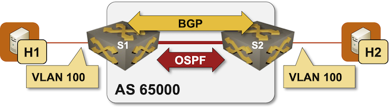

Proxy ARP in EVPN MAC-VRF Instances
IP-to-MAC address resolution using ARP/ND is the biggest source of flooding traffic in most IP networks, creating significant challenges in large layer-2 domains and forcing some Internet eXchange Point (IXP) operators to deploy countermeasures such as ARP sponge.
As EVPN type-2 (MAC/IP) routes already carry MAC and IPv4/IPv6 address information, we might be able to use that information to implement a proxy ARP service (also called ARP suppression) on PE-devices – the local PE-device would reply to ARP/ND requests using EVPN-derived information instead of flooding them to all other PE-devices participating in the same MAC-VRF.
You can check out whether the devices you plan to use support the ARP suppression functionality in this lab exercise that uses a very simple topology with a single MAC-VRF instance, two hosts, and two switches.

Expert
This lab is more challenging than the previous EVPN lab exercises, and the Arista EOS documentation on the proxy ARP feature could be much better.
Device Requirements
You can use any device supported by the netlab OSPF, BGP, VRF, and VLAN configuration modules. netlab will also try to configure VXLAN, EVPN, and MAC-VRF for the tenant VLAN.
Start the Lab
Assuming you already set up your lab infrastructure:
- Change directory to
evpn/8-proxy-arp - Execute netlab up
- Log into lab devices with netlab connect and verify that they are properly configured.
- If netlab configured VXLAN and EVPN on your devices, ping H2 from H1 to verify everything works as expected.
Existing Device Configuration
- The switches in your lab are preconfigured with red VLAN using VLAN tag 100 and VXLAN VNI 10100.
- The red VLAN is in tenant VRF
- IPv4 addresses are configured on all links and VLANs (details).
- The switches run OSPF in area 0 across the interswitch link (details).
- The switches have IBGP sessions between their loopback interfaces (details). These sessions are configured to exchange IPv4 and EVPN prefixes.
- A MAC-VRF is configured for the red VLAN using import- and export route target
65000:100
Warning
Your lab won’t have the EVPN address family in IBGP sessions, VXLAN configuration, or MAC-VRF configuration if netlab can’t configure them on your device. In that case, use the procedure you’ve mastered in the Build an EVPN-based MAC-VRF instance lab exercise to configure them.
Establishing the Baseline
You might want to observe the ARP traffic between H1 and H2 before starting device configuration:
- Start
netlab capture h2 eth1 arpin a terminal window to capture ARP requests sent to H2 and its replies. - Connect to H1 with
netlab connect h1 - Execute
arp -d h2to clear the ARP entry for H21 followed byping h2 -c 1to trigger the ARP address resolution. - You should see an ARP request and a corresponding ARP reply in the netlab capture printout every time you execute the above commands
ARP traffic observed on the eth1 interface of H2
$ netlab capture h2 eth1 arp
Starting packet capture on h2/eth1: sudo ip netns exec clab-proxyarp-h2 tcpdump -i eth1 --immediate-mode -l -vv arp
tcpdump: listening on eth1, link-type EN10MB (Ethernet), snapshot length 262144 bytes
13:25:57.433726 ARP, Ethernet (len 6), IPv4 (len 4), Request who-has 172.16.0.4 tell 172.16.0.3, length 46
13:25:57.433742 ARP, Ethernet (len 6), IPv4 (len 4), Reply 172.16.0.4 is-at aa:c1:ab:0d:10:74 (oui Unknown), length 28
You should also log into S1 and inspect its EVPN MAC-IP routes. Some devices add IP information to those routes without additional configuration (for example, Cisco IOS/XE). Others (for example, Arista EOS or FRRouting) create MAC-IP routes with minimal information and add IP information to the MAC-IP routes only after receiving an ARP query for their own IP address.
EVPN MAC-IP routes on S1 running Arista EOS after H1 pinged H2
s1#show bgp evpn route-type mac-ip
BGP routing table information for VRF default
Router identifier 10.0.0.1, local AS number 65000
Route status codes: * - valid, > - active, S - Stale, E - ECMP head, e - ECMP
c - Contributing to ECMP, % - Pending best path selection
Origin codes: i - IGP, e - EGP, ? - incomplete
AS Path Attributes: Or-ID - Originator ID, C-LST - Cluster List, LL Nexthop - Link Local Nexthop
Network Next Hop Metric LocPref Weight Path
* > RD: 10.0.0.2:100 mac-ip aac1.ab0d.1074
10.0.0.2 - 100 0 i
* > RD: 10.0.0.1:100 mac-ip aac1.ab9d.5fad
- - - 0 i
EVPN routes on S1 running Cisco IOS/XE after H1 pinged H2
s1#show bgp l2vpn evpn rd 10.0.0.1:100
BGP table version is 13, local router ID is 10.0.0.1
Status codes: s suppressed, d damped, h history, * valid, > best, i - internal,
r RIB-failure, S Stale, m multipath, b backup-path, f RT-Filter,
x best-external, a additional-path, c RIB-compressed,
t secondary path, L long-lived-stale,
Origin codes: i - IGP, e - EGP, ? - incomplete
RPKI validation codes: V valid, I invalid, N Not found
Network Next Hop Metric LocPrf Weight Path
Route Distinguisher: 10.0.0.1:100
*>i [2][10.0.0.1:100][0][48][AAC1AB118027][0][*]/20
10.0.0.2 0 100 0 ?
*> [2][10.0.0.1:100][0][48][AAC1AB2DA087][0][*]/20
0.0.0.0 32768 ?
*>i [2][10.0.0.1:100][0][48][AAC1AB56A391][0][*]/20
10.0.0.2 0 100 0 ?
*>i [2][10.0.0.1:100][0][48][AAC1AB56A391][32][172.16.0.4]/24
10.0.0.2 0 100 0 ?
*> [2][10.0.0.1:100][0][48][AAC1ABAE4A2B][0][*]/20
0.0.0.0 32768 ?
*> [2][10.0.0.1:100][0][48][AAC1ABAE4A2B][32][172.16.0.3]/24
0.0.0.0 32768 ?
*> [3][10.0.0.1:100][0][32][10.0.0.1]/17
0.0.0.0 32768 ?
Network Next Hop Metric LocPrf Weight Path
*>i [3][10.0.0.1:100][0][32][10.0.0.2]/17
10.0.0.2 0 100 0 ?
Configuration Tasks
You have to configure two EVPN-related parameters:
- S1 and S2 should listen to all ARP traffic on the red VLAN and include IP information in type-2 EVPN routes without receiving a direct ARP request.
- S1 and S2 should respond to ARP requests for other IP hosts attached to the same subnet and reply with information received in EVPN MAC-IP routes.
The configuration details are extremely device-specific. These nerd knobs can be configured at the interface level or globally. For example, you have to use router l2-vpn configuration on Arista EOS. Also, when configuring ARP suppression globally, you often have to specify the IP subnets in which ARPs should be suppressed, usually with an IP prefix-list.
Verification
- Perform the “clear ARP cache, ping the other host” procedure on H1 and H2 (you have to do it on both hosts to trigger ARP requests from H1 and H2)
- Examine the EVPN MAC-IP routes. There should be an entry with MAC and IP address for both hosts, even when the hosts never contact the switches.
EVPN MAC-IP routes on S1 running Arista EOS
s1#show bgp evpn route-type mac-ip
BGP routing table information for VRF default
Router identifier 10.0.0.1, local AS number 65000
Route status codes: * - valid, > - active, S - Stale, E - ECMP head, e - ECMP
c - Contributing to ECMP, % - Pending best path selection
Origin codes: i - IGP, e - EGP, ? - incomplete
AS Path Attributes: Or-ID - Originator ID, C-LST - Cluster List, LL Nexthop - Link Local Nexthop
Network Next Hop Metric LocPref Weight Path
* > RD: 10.0.0.1:100 mac-ip aac1.abdd.90e1
- - - 0 i
* > RD: 10.0.0.1:100 mac-ip aac1.abdd.90e1 172.16.0.3
- - - 0 i
* > RD: 10.0.0.2:100 mac-ip aac1.abe0.43e3
10.0.0.2 - 100 0 i
* > RD: 10.0.0.2:100 mac-ip aac1.abe0.43e3 172.16.0.4
10.0.0.2 - 100 0 i
- You’ll be able to see VLAN ARP entries on some platforms, even though neither H1 nor H2 ever sent an ARP request to S1 or S2.
ARP table in the tenant VRF on S1 running Arista EOS
s1#show arp vrf tenant
Address Age (sec) Hardware Addr Interface
172.16.0.3 0:00:04 aac1.abdd.90e1 Vlan100, Ethernet2
172.16.0.4 - aac1.abe0.43e3 Vlan100, Vxlan1
- Use the
netlab capture h2 eth1 arp or icmpcommand to start the capture of ARP and ICMP packets on H2 Ethernet interface. You should not see any ARP requests preceding the ICMP packets after clearing the ARP cache on H1 and pinging H2.
Tip
You will probably see unicast ARP requests (sent as unicast Ethernet packets) that H1 uses to test whether H2 is still alive. Use the netlab capture h2 eth1 -e -l -vv arp or icmp command to display Ethernet headers in the captured packets.
Done? Let’s see how you can use this functionality to implement Intra-Subnet Routing with ARP Routes.
Cheating
If you’re using Arista EOS, you can use netlab config -l s1,s2 proxy_arp to configure ARP suppression on S1 and S2.
Reference Information
Lab Wiring
| Origin Device | Origin Port | Destination Device | Destination Port |
|---|---|---|---|
| s1 | Ethernet1 | s2 | Ethernet1 |
| h1 | eth1 | s1 | Ethernet2 |
| h2 | eth1 | s2 | Ethernet2 |
Lab Addressing
| Node/Interface | IPv4 Address | IPv6 Address | Description |
|---|---|---|---|
| s1 | 10.0.0.1/32 | Loopback | |
| Ethernet1 | 10.1.0.1/30 | s1 -> s2 | |
| Vlan100 | 172.16.0.1/24 | VLAN red (100) -> [h1,h2,s2] (VRF: tenant) | |
| s2 | 10.0.0.2/32 | Loopback | |
| Ethernet1 | 10.1.0.2/30 | s2 -> s1 | |
| Vlan100 | 172.16.0.2/24 | VLAN red (100) -> [h1,s1,h2] (VRF: tenant) | |
| h1 | |||
| eth1 | 172.16.0.3/24 | h1 -> [s1,h2,s2] | |
| h2 | |||
| eth1 | 172.16.0.4/24 | h2 -> [h1,s1,s2] |
OSPF Routing (Area 0)
| Router | Interface | IPv4 Address | Neighbor(s) |
|---|---|---|---|
| s1 | Loopback | 10.0.0.1/32 | |
| Ethernet1 | 10.1.0.1/30 | s2 | |
| s2 | Loopback | 10.0.0.2/32 | |
| Ethernet1 | 10.1.0.2/30 | s1 |
IBGP Sessions
| Node | Router ID/ Neighbor |
Router AS/ Neighbor AS |
Neighbor IPv4 |
|---|---|---|---|
| s1 | 10.0.0.1 | 65000 | |
| s2 | 65000 | 10.0.0.2 | |
| s2 | 10.0.0.2 | 65000 | |
| s1 | 65000 | 10.0.0.1 |
-
arp will report an error if the host has no corresponding ARP entry ↩